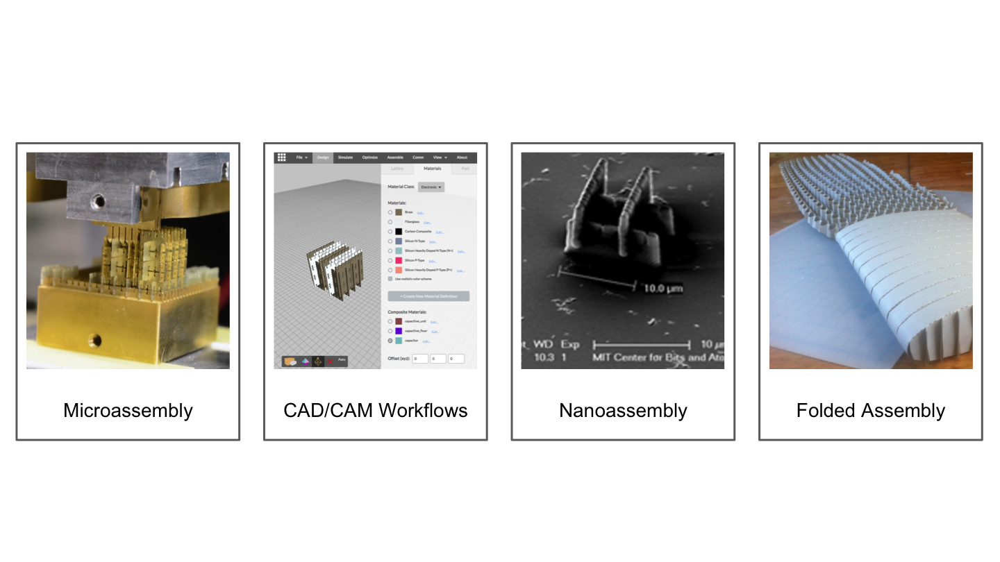
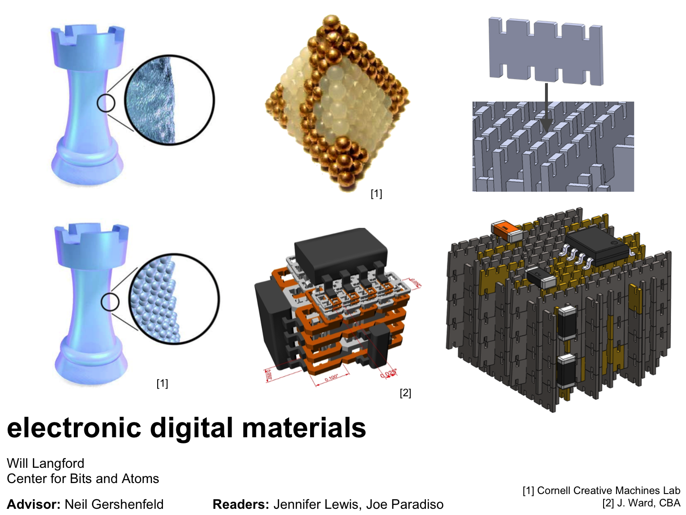
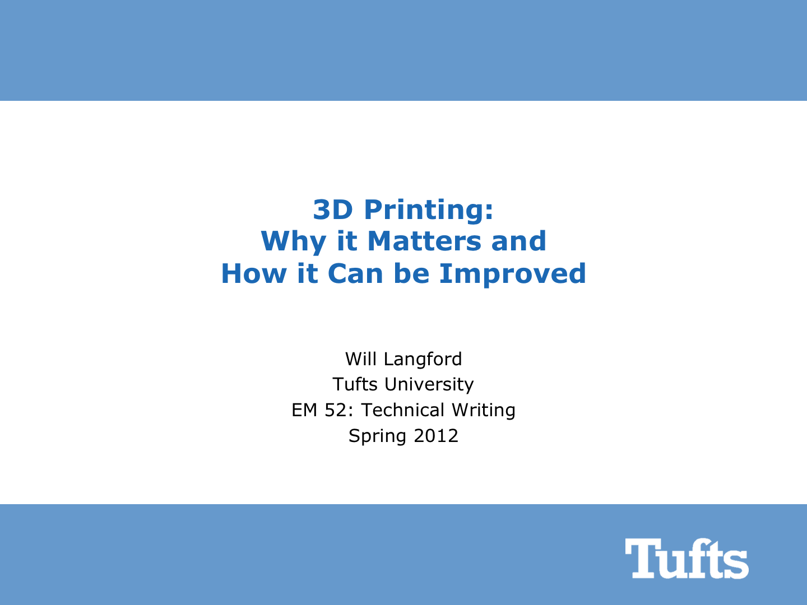

← Will Makes Things.

Presentations
Merck, July 2016
 ASME MSEC, June 2016
ASME MSEC, June 2016
 Dimensions of Doctor Who, April 2016
Dimensions of Doctor Who, April 2016
Media Lab Crit Day, November 2013
Modeling FDM Extrusion, March 2012
CBA 2016
ASME MSEC, June 2016
Dimensions of Doctor Who, April 2016